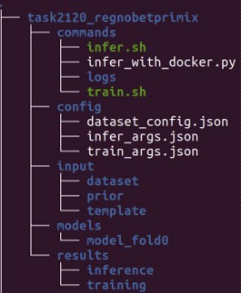

Core package#
Requirements#
Operating system#
The tool has been tested with Python 3.8 and 3.10 on Ubuntu 20.04 and Windows 10.
Python libraries#
The following Python libraries are required:
PyTorch (Installation instructions: https://pytorch.org/)
PyTorch-Ignite (install with:
pip install pytorch-ignite)MONAI
(install from this GitHub fork with:
pip install git+https://github.com/aaronkujawa/MONAI.git@medtronic)
NumpPy (install with
pip install numpy)Nibabel (install with
pip install nibabel)tqdm (install with
pip install tqdm)
HD-BET#
HD-BET is used for brain extraction if the model was trained on skull-stripped images. To install HD-BET directly from GitHub, with:
pip install git+https://github.com/MIC-DKFZ/HD-BET
or for installation from a local copy of the repository:
git clone https://github.com/MIC-DKFZ/HD-BET.git
cd HD-BET
pip install -e .
cd ..
The first time HD-BET is run after installation, it should automatically download model weights from zenodo.org. If there is a problem and the error “0.model not found”, you can download it manually here and place the model weights in the location requested in the error message.
ANTs#
Furthermore, preprocessing involves image registration which relies on routines available in Advanced Normalization Tools (ANTs). The two required pre-compiled binaries for Linux/Windows/MacOS can be downloaded here. These have to be made accessible from the command line via the commands “antsRegistration” and “antsApplyTransforms” from the command line.
On Linux, this can be achieved by
placing the two files under /usr/bin (or any other path that is part of the
PATH environment variable) and making them executable with chmod +x <filename>.
Alternatively, this can be achieved by creating two new text files named “antsRegistration” and “antsApplyTransforms” under any folder that is part of the PATH environment variable, with the following file contents:
`#! /bin/sh
exec <...>/antsRegistration.glnxa64 "$@"`
and
`#! /bin/sh
exec <...>/antsApplyTransforms.glnxa64 "$@"`
where <...> is the absolute path to the folder containing the downloaded Linux binaries.
Preparation of Model and Inference Data#
Clone the dynunet_pipeline GitHub repository. (
git clone https://github.com/aaronkujawa/dynunet_pipeline.git)Download the
datafolder that includes a subfoldertaskswith one task folder for each model. Each task folder has the following structure:
commandscontains scripts to run training and inference, where inference can also be run with the docker container.configcontains the dataset split (training, validation, inference) and labels (dataset_config.json) and parameters for the training (train_args.json) and inference (infer_args.json).inputcontains the images and labels of the dataset (dataset), split into training and testing data, the input prior (prior) and the registration template (template)modelscontains the trained models used for inferenceresultscontains the results of model training and inference (note: after successful model training, the model has to be copied/moved to themodelsfolder to be used for inference)
Merge the
datafolder with thedatafolder in the repository root folderdynunet_pipeline
Run training (example for Task2120)#
Training can be run by executing the script:
data/tasks/task2120_regnobetprimix/commands/train.sh
Note: If multiple GPUs are not available, the set multi_gpu=0 in the script.
This command will run training and save model checkpoints under:
data/tasks/task2120_regnobetprimix/results/training/model_fold0
If you want to use the trained model for inference, copy this folder to:
data/tasks/task2120_regnobetprimix/results/models
But for now we will continue with the pretrained model that is currently saved under that location.
Run inference (example for Task2120)#
Inference can be run with the following script:
data/tasks/task2120_regnobetprimix/commands/infer.sh
Note: If multiple GPUs are not available, the set multi_gpu=0 in the script.
Inference arguments#
The default inference arguments are saved under src/args.py.
These can be overwritten by including task specific arguments saved under data/tasks/task2120_regnobetprimix/config/infer_args.json.
For example, if you create a new model checkpoint (.pt file) during training and copied it to
data/tasks/task2120_regnobetprimix/models/model_fold0,
make sure to adjust the following argument in the infer_args.json file:
"checkpoint": "checkpoint_key_metric=0.XXXX.pt"
so that it matches the new model checkpoint name.
The argument "test_files_dir" specifies the directory with .nii.gz images to perform the inference on.
All paths specified as arguments have to be absolute paths or relative to the task directory
(here the task directory is: data/tasks/task2120_regnobetprimix).
This script will run inference on all images in the "test_files_dir" directory and save the predictions in a new directory
specified with the "out_dir" argument (default: results/inference).
Registration to MNI template#
The model for Task2120 was trained on images that were registered to the MNI template. Therefore, the test images
need to be registered to the MNI template as well.
The provided test images for Task2120 are already registered to MNI space. However, if a test image is NOT
registered, the "reg" argument needs to be set to true.
In addtion, the
"registration_template_path" and/or registration_template_bet_path argument need to be defined
to specify a registration template for images with and without brain extraction, respectively:
for test images that were not pre-processed with brain extraction, the registration template image should be the original MNI template:
input/template/MNI_152_mri.nii.gz(default)for test images that were pre-processed with brain extraction, the registration template image should be the brain extracted MNI template:
input/template/MNI_152_mri_hd-bet_stripped.nii.gz(default)
To inform the algorithm that the input images were pre-processed with brain extraction, the "input_is_bet" argument
needs to be set to true, otherwise it should be set to false (default).
Brain extraction#
If the model was trained on brain extracted images, the test images need to be pre-processed with brain extraction as well.
Task2120 was trained on images without brain extraction, so this step is not required for this task. However,
if brain-extraction is required, the "bet" argument needs to be set to true in the infer_args.json file.
"bet": true,
"val_num_workers": 0
The second argument is required because the brain extraction is CUDA based and CUDA with multiprocessing does not work
by default.
This step will happen AFTER the registration to the MNI template, so if both preprocessing steps
(registration and brain extraction) are required, use the MNI_152_mri.nii.gz template for registration.
Note that brain-extraction with HD-BET should not be performed on images that have already been brain-extracted, because this removes brain tissue.